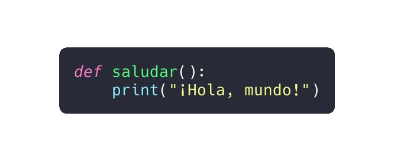
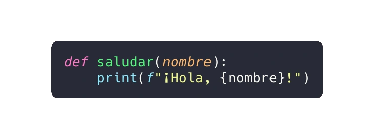
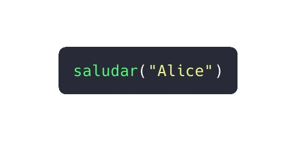
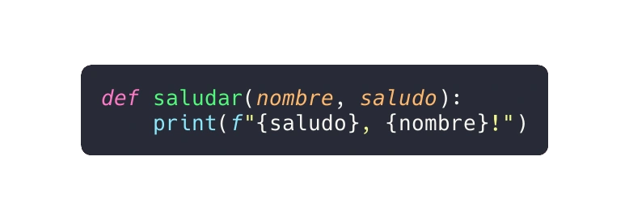
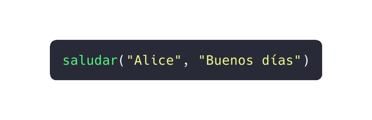

En Python, las funciones son bloques de código que realizan tareas específicas. Permiten dividir problemas complejos en partes más pequeñas, lo que hace que nuestros programas sean más comprensibles y reutilizables. Aquí tienes una guía detallada sobre las funciones en Python, junto con ejemplos de código real:
Las funciones definidas por el usuario agrupan código para realizar una tarea específica y se les da un nombre (identificador). Cuando se invoca una función desde cualquier parte del programa, ejecuta el código definido en su cuerpo. Ejemplo de declaración de función:
Para usar la función saludar(), debemos llamarla:
Una función puede declararse con parámetros (argumentos). Los parámetros son valores que se pasan al declarar una función. Ejemplo:
Llamada a la función con argumento:
Puedes definir funciones con varios parámetros. Ejemplo:
Llamada a la función con dos argumentos:
